어로산업기사 (2016-05-08 기출문제)
1과목: 어구학
1. 폭 100코, 길이 100코인 삼각형 망지를 재단하려면 그 빗변의 재단비는?
- 1p.2b
- 전사단(AB)
- 2p.1b
- 1p.1b
(정답률: 94%)

2. 다음의 어구 중에서 그물실의 유연성이 가장 많이 요구되는 것은?
- 정치망
- 안강망
- 자망
- 건착망
(정답률: 93%)
3. 낙망 어구의 규모를 결정하는 기준은?
- 어구의 부설 수심
- 길그물의 길이
- 헛통그물 입구의 크기
- 멍줄의 길이
(정답률: 93%)
4. 소라 껍질이나 피조개 껍질을 어구로 사용하여 어획하는 수산생물은?
- 개불
- 주꾸미
- 민꽃게
- 전복
(정답률: 97%)
5. 가짜 미끼를 사용하여 주로 어획하는 어종은?
- 삼치
- 문어
- 참치
- 조피볼락
(정답률: 89%)
6. 540D의 P.E사 100m의 무게는?
- 5.4g
- 6g
- 54g
- 60g
(정답률: 74%)
7. 그림과 같은 운침법으로 편망하면 어떤 매듭이 맺어지는가?
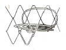
- 참매듭(바른 매듭)
- 막매듭
- 이중 참매듭
- 이중 막매듭
(정답률: 87%)
8. 어구의 부속구로서 뜸줄, 발줄, 후릿줄과 같이 3 방향으로 나가는 줄을 1점에서 연결하기 위한 연결구는?
- 버터 플라이
- 샤클
- 스위블
- 와프 링
(정답률: 85%)
9. 중층 트롤그물을 예망하는 도중에 그물의 깊이를 조절하는 방법으로 적합한 것은?
- 뜸의 부력과 발돌의 침강력 조절
- 끌줄 길이와 예망 속도의 조절
- 전개판의 저항과 무게 조절
- 끌줄과 후릿줄의 무게 조절
(정답률: 94%)
10. 다음의 저층 트롤어구에서 성형률을 가장 작게 주는 곳은?
- 천장망 앞
- 날개
- 자무그물
- 끝자루
(정답률: 80%)
11. 자루그물이 등판과 밑판 및 옆판으로 구성되는 트롤그물은?
- 2폭 트롤
- 3폭 트롤
- 4폭 트롤
- 6폭 트롤
(정답률: 93%)
12. 외끌이 기선저인망의 후릿줄이 갖추어야 할 조건이 아닌 것은?
- 표면이 미끄럽지 않을 것
- 킹크가 생기지 않을 것
- 침강 속도가 느릴 것
- 사리기가 쉬울 것
(정답률: 92%)
13. 끊어지는 순간의 그물실 길이를 L, 늘어났다 원상태로 돌아오는 그물실 길이를 Le, 늘어났다 원상태로 돌아오지 않는 길이를 Lp라고 하면 신장 회복율은?
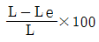
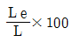
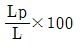
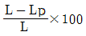
(정답률: 80%)
14. 어포부에 여자망을 이용하는 어구는?
- 유자망
- 권현망
- 건착망
- 저인망
(정답률: 94%)
15. 자망어구를 구성하는 단위 어구는?
- 필
- 속
- 절
- 폭
(정답률: 91%)
16. 다음의 신소재 섬유 중 신장 탄성률이 가장 높아 현재 중층 트롤 그물의 그물감으로 사용되고 있는 것은?
- Kevlar
- Vectran
- Dyneema
- Technora
(정답률: 88%)
17. 건착망의 길이를 결정하는 데 고려해야 할 요소와 관계가 가장 적은 것은?
- 배의 투망 속도
- 어군의 유영 속도
- 그물의 침강 속도
- 어군의 유영 수심
(정답률: 66%)
18. 타는 모양은 녹으면서 서서히 타고 파라핀 냄새가 나며 투명하고 둥근 덩어리를 남기는 섬유는?
- 폴리비닐알콜(PVA)
- 폴리아미드(PA)
- 폴리에틸렌(PE)
- 폴리에스테르(PES)
(정답률: 91%)
19. 다음 중 편망 능률이 가장 큰 그물감은?
- 참매듭 그물감
- 막매듭 그물감
- 관통 그물감
- 랏쉘 그물감
(정답률: 88%)
20. 트롤이나 기선저인망과 같은 어구는 어구설계의 표현을 어떻게 표시하는가?
- 로우프의 길이로 표시한다.
- 길이는 로우프의 길이로, 깊이는 망목의 뻗친 길이로 표시한다.
- 로우프의 길이의 절반으로 표시한다.
- 폭은 망지의 뻗친 길이의 절반으로, 길이는 뻗친 길이로 표시한다.
(정답률: 85%)
2과목: 어업기기학
21. 네트 레코더의 기본 구성에 속하지 않는 것은?
- 탐지부
- 전송부
- 증폭부
- 수신부
(정답률: 86%)
22. 어군탐지기에서 이용하는 음의 특성에 대한 설명으로 옳지 않은 것은?
- 물이라는 매질 속을 전반하는 수중음이다.
- 주파수가 20 kHz 이상으로 귀에는 들리지 않는 초음파이다.
- 단일 주파수의 음이다.
- 지속시간이 긴 연속음이다.
(정답률: 87%)
23. 어업 기계 중 감아올리는 방식이 권동식인 것은?
- 양승기
- 양망기
- 트롤 윈치
- 포경 섬강 윈치
(정답률: 89%)
24. 트롤윈치의 구동 중 정지하는 방법으로 주로 쓰이는 방식은?
- 밴드 브레이크
- 유압 브레이크
- 공압 브레이크
- 토크 브레이크
(정답률: 91%)
25. 어군탐지기에서 송·수신 시 사용하는 초음파의 파형은?
- 연속파
- 불규칙파
- 정형파
- 펄스파
(정답률: 94%)
26. 송·수파기를 선회에 돌출물을 내지 않고 엷은 철판을 통하여 송·수파하게 설치하는 방법은?
- 현측 설치
- 선회장비
- 선내장비
- 수직 승강식
(정답률: 79%)
27. 트롤선의 트롤 윈치의 축마력은 어느 정도인가?
- 예망마력의 1/2이상
- 예망마력과 대등
- 주기출력의 1/2이상
- 주기출력과 대등
(정답률: 97%)
28. 양승기의 권양력과 가장 관계가 먼 것은?
- 억압 롤러의 압력
- 풀리에 대한 줄의 접촉각
- 풀리와 줄 사이의 마찰계수
- 현측 롤러의 크기
(정답률: 79%)
29. 회전 양망판(turn table)을 사용하는 양망 방법이 주로 적용된 어구는?
- 트롤
- 저인망
- 정치망
- 선망
(정답률: 86%)
30. 원동기 변속장치의 종류 중 동력전달 방식에서 기계적 에너지가 전기적 에너지로 변하고 다시 기계적 에너지로 변화되는 방식은?
- 전기적 방식
- 기계적 방식
- 유체식 방식
- 변속적 방식
(정답률: 81%)
31. 어군탐지기에서 음파의 반사강도가 커서 물표가 잘 탐지되는 경우는?
- 음속이 빠를수록 잘 탐지된다.
- 파장이 클수록 잘 탐지된다.
- 파장의 굴절이 클수록 잘 탐지된다.
- 해수와 물표의 음향 임피던스의 차가 클수록 잘 탐지된다.
(정답률: 83%)
32. 우리나라의 연안 소형어선에서 주기 전도식 소형 사이드 드럼에 의존하고 있는 어업의 종류가 아닌 것은?
- 유자망 어업
- 통발 어업
- 외줄 낚시 어업
- 연승 어업
(정답률: 75%)
33. 양승기(line hauler)에서 억압 롤러(pressing roller)의 가장 중요한 역할은?
- 줄을 멈추게 하는 역할
- 줄의 윤활이 잘 되도록 하는 역할
- 줄과 풀리(pulley) 사이의 마찰력을 증가시키는 역할
- 줄의 장력을 증가시키기 위한 역할
(정답률: 92%)
34. 어군탐지기의 송·수파기를 어선에 설치할 때 가장 좋은 곳은?
- 선미에서 전장의 1/4 되는 위치와 1/2 되는 위치 사이
- 선의 중심부
- 선수에서 전장의 1/4 되는 위치와 1/2 되는 위치 사이
- 선수에서 2/3 되는 위치와 선미 사이
(정답률: 91%)
35. 연승의 양승기에 있어서 권양장력이 40kg, 양승속도가 3m/sec, 효율이 90%인 5 단계의 전동장치에 의해서 구동된다면 주기가 부담하는 동력은?
- 2.1HP
- 2.3HP
- 2.5HP
- 2.7HP
(정답률: 73%)
36. 송·수파기의 선내 장비식에서 송·수파기를 잠겨두는 철재 탱크 속에 들어 있는 것은?
- 물 또는 피마자유
- 그리스
- 윤활유
- 알콜
(정답률: 92%)
37. 네트 레코더의 탐지 능력에 대한 설명으로 옳지 않은 것은?
- 망구 전개 상태
- 그물의 전체 길이
- 망구 부근의 어군
- 해저의 상태
(정답률: 76%)
38. 다음 중 네트 존데에 대한 사항으로 가장 적합한 것은?
- 어구의 수중에서의 전개 상태를 정확하게 파악하기 위한 장치이다.
- 기본적으로 탐지부, 전송부, 수신부 및 기록부 등으로 구성된다.
- 트롤 어구에서 수중에서 예인되고 있는 전개판의 간격을 측정하는 장치로 사용된다.
- 선망에서는 그물의 투망에서부터 그물자락의 침강상태를 정확하게 파악하기 위한 목적으로 사용된다.
(정답률: 95%)
39. 소너의 송·수파기 운용장치와 관계가 없는 것은?
- 승강장치
- 선회장치
- 부각 조정장치
- 진동 방지장치
(정답률: 69%)
40. L.C.R 직렬회로에서 임피던스(impedance)는 어떻게 표시되는가?
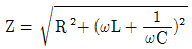
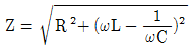
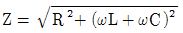
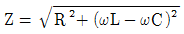
(정답률: 84%)
3과목: 어장학
41. 다음 중 양성 주광성이 가장 현저한 어류는?
- 고등어
- 볼락
- 대구
- 명태
(정답률: 88%)
42. 해수의 광학적 성질 중 하나인 수색을 가장 바르게 설명한 것은?
- 해면에 입사한 빛 중에 표층부근의 각 층에 있어서 흡수와 산란한 빛의 색깔
- 태양을 등지고 그늘에서 해면에 나타난 입사한 빛 중에 표층부근의 각층에 있어서 흡수와 산란하여 다시 해면 도달 빛과 해면 반사광이 합쳐져 나타난 빛의 색깔
- 태양을 마주보고 해면에 나타난 입사한 빛 중에 표층부근의 각층에 있어서 흡수와 산란하여 다시 해면 도달 빛과 해면 반사광이 합쳐져 나타난 빛의 색깔
- 해면에 입사한 빛 중에 표층부근의 각층에 있어 흡수와 반사한 빛의 색깔
(정답률: 83%)
43. 취급이 간편하여 선상에서 많이 사용하는 기압계 중 금속의 탄성을 이용한 것은?
- 수온 기압계
- 아스만 기압계
- 아네로이드 기압계
- 모발 기압계
(정답률: 84%)
44. 어체 내 삼투압 조절과 가장 관계있는 환경 요인은?
- 수온
- 염분
- 산소량
- 투명도
(정답률: 80%)
45. 해양 전선역에는 일반적으로 좋은 어장이 형성되는데 이 전선역을 식별하는 가장 쉬운 방법은?
- 수색의 변화 탐색
- 연직적 온도 경사 측정
- 표층의 수평온도 경사 측정
- 부유물이 띠 모양으로 모인 것의 육안 식별
(정답률: 95%)
46. 어초가 좋은 어장이 되는 이유 중 가장 관계가 적은 것은?
- 해초, 먹이 등이 풍부하여 외적으로부터 은폐하거나 먹이가 풍부
- 상승류가 존재하여 영양염 풍부
- 교란에 의한 와류를 수분하여 어군의 농밀화가 용이함
- 유속이 약하므로 어군의 휴식에 적합함
(정답률: 79%)
47. 해양에서의 수온의 변화 범위는?
- -2.0℃~32.0℃
- -5.0℃~40.0℃
- 0℃~30.0℃
- 5℃~25.0℃
(정답률: 90%)
48. 어황의 정의에 대한 설명으로 틀린 것은?
- 일반적으로 어장의 날마다 해마다의 어획량의 변동을 의미한다.
- 좁은 의미로 바다의 상태를 말한다.
- 넓은 의미로는 어장구성, 어획량, 어획노력까지 포함한다.
- 수온, 염분, 용존산소 등은 포함하지 않는다.
(정답률: 90%)
49. 어장 형성 요인이 옳게 짝지어진 것은?
- 조경 - 수괴의 경계역
- 조목 - 발산역
- 용승 - 수렴역
- 전선 - 동일 수괴역
(정답률: 90%)
50. 태풍이 접근할 전조와 가장 거리가 먼 것은?
- 너울의 내습이나 해명(바다울림)이 관측됨
- 권운이 빨리 이동하면서 중층운으로 운고가 낮아짐
- 기압의 뚜렷한 변화가 없음
- 기온이나 습도가 비정상적으로 상승함
(정답률: 98%)
51. 어장환경요인 중 하나인 용승류의 설명으로 옳지 않은 것은?
- 용승류는 깊은 수심의 물이 표면으로 올라오는 현상이다.
- 용승류가 일어나는 해역에서는 생산력이 매우 높다.
- 용승류는 우리나라 연안에서도 볼 수 있는 현상이다.
- 용승류는 반드시 하층수가 찬 곳에서만 일어나는 현상이다.
(정답률: 97%)
52. 해수(海水)의 밀도(密度)를 감소시키는 요인은?
- 온도상승
- 증발
- 결빙(結氷)
- 압력증가
(정답률: 64%)
53. 다음 중 해수의 온도가 0℃ 이하로 내려가는 주원인은?
- 고밀도
- 해수의 압력
- 해수의 염분농도
- 해류온도의 하강
(정답률: 79%)
54. 다음 중 해수의 맑기를 측정하는 것은?
- 수색계
- 투명도판
- 조도계
- 측심기
(정답률: 88%)
55. 다음 해류 중 한류인 것은?
- 쿠로시오
- 걸프 스트림
- 래브라도 해류
- 멕시코 만류
(정답률: 71%)
56. 엘리뇨 현상의 원인과 관계가 가장 큰 것은?
- 조경 어장에서 발생
- 연안 수산생물의 변성
- 기온과 습도의 하강
- 고온수의 역류유입
(정답률: 82%)
57. 진행속도가 빠르고 외우나 돌풍이 예상되는 전선은?
- 온난 전선
- 한랭 전선
- 폐색 전선
- 정체 전선
(정답률: 96%)
58. 다음 중 저서 어류의 주 먹이가 되는 것은?
- 유영동물(Nekton)
- 저서동물(Benthos)
- 동물성 플랑크톤(Zooplankton)
- 식물성 플랑크톤(Phytoplankton)
(정답률: 82%)
59. 다음의 해양환경 관측장치 중 수온과 염부 및 수심을 측정할 수 있는 것은?
- 전도온도계
- BT
- XBT
- CTD
(정답률: 93%)
60. 다음 중 적고의 발생과 가장 거리가 먼 것은?
- 부영양화
- 와편모조류
- 용존산소
- 일조량
(정답률: 78%)
4과목: 어법학
61. 정치망 어구의 기술적 개량으로 2중낙망과 2단식 원통을 하는 이유로 가장 적합한 것은?
- 섬유가 갖는 결점을 보강하기 위해서
- 감시장치로 어군의 입망을 관찰하기 위해서
- 원통의 날림방지를 위해서
- 입망한 고기의 출망을 방지하기 위해서
(정답률: 100%)
62. 근해 안강망 어업에서 어구의 투·양망이 이루어지는 곳은?
- 선수
- 선미
- 선체 우현
- 선체 좌현
(정답률: 80%)
63. 꽁치 유자망 어구의 운용 중 그물이 얽히는 순대말이를 방지하기 위한 유의사항을 바르게 설명한 것은?
- 뜸줄은 꼬임이 안정된 Z 꼬임 두가닥을 사용해야 한다.
- 뜸줄을 발줄보다 짧게 하는 것이 좋다.
- 부력을 가능한 크게 해야 한다.
- 투망시 그물에 지나친 긴장이 작용하지 않도록 한다.
(정답률: 85%)
64. 선망어업에서 투망 완료 후 그물 양끝 사이로 어군이 탈출하는 것을 막기 위한 조치로 올바르지 못한 것은?
- 고속정(speed boat)이 요란한 소리를 내며 그물 주위를 선회한다.
- 그물의 양끝 사이에 전기 스크린을 설치하여 충격 전류를 보낸다.
- 그물의 양끝 사이에 공기 호스를 넣어 기포를 발생시킨다.
- 녹색염료가 부착된 돌을 투입하여 차단한다.
(정답률: 88%)
65. 재래식 권현망 어구 중 오비기의 1코의 뻗힌 길이는?
- 300~360 cm
- 100~160cm
- 1~2절
- 5~6절
(정답률: 92%)
66. 우리나라 연안에서 꽁치 어획의 85~90%를 차지하는 어법은?
- 걸그물
- 주목망
- 봉수망
- 정치망
(정답률: 87%)
67. 예망 중 해저의 장애물에 그물이 걸렸을 때 일어나는 징후로 틀린 것은?
- 선체에 충격을 받으며 회전이 무거워진다.
- 끌줄의 수평각이 작아진다.
- 끌줄이 풀려 나간다.
- 전개각이 커진다.
(정답률: 86%)
68. 한국의 외두리 건착망에서 뜸줄 단위 길이당의 부력이 가장 커야 할 곳의 위치는?
- 최초의 양망되는 부분
- 최후에 양망되는 부분
- 최초에 양망되는 부분과 최후에 양망되는 부분 양쪽 모두
- 뜸줄의 중앙부
(정답률: 89%)
69. 기선권현망 어업의 주요 대상 어종은?
- 멸치
- 꽁치
- 갈치
- 조기
(정답률: 92%)
70. 다음 중 가장 발달한 정치망 어구는?
- 대부망
- 낙망
- 승망
- 장망
(정답률: 85%)
71. 함정어법을 사용하는 어구로만 묶어진 것은?
- 봉수망, 들망, 투망
- 선망, 죽방렴, 안강망
- 낭장망, 주목망, 주낙
- 통발, 문어단지, 정치망
(정답률: 100%)
72. 오징어 채낚기어업에 대한 설명으로 옳지 않은 것은?
- 집어등은 광도가 큰 것이 유리하나, 선박의 규모와 비용 등을 고려해야한다.
- 수중 집어등은 선산 집어등에 비해 집어된 오징어를 선저에 오랫동안 머물게 한다.
- 물돛은 어선이 바람에 의하여 떠밀려가는 것을 방지하는 역할을 한다.
- 물돛은 유체저항이 큰 것이 좋다.
(정답률: 89%)
73. 안강망 어법의 개량식 어구에 해당되는 것은?
- 어구를 전개시키기 위하여 수해가 있다.
- 어구를 전개시키기 위하여 암해가 있다.
- 아궁이의 양옆에 범포가 붙어 있다.
- 아궁이의 상하변에 뜸줄과 발줄이 없다.
(정답률: 98%)
74. 그림은 주낙어구의 모식도이다. 모릿줄이랑 어느 부분을 말하는 것인가?
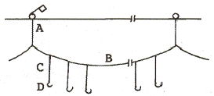
- A
- B
- C
- D
(정답률: 94%)
75. 트롤어법과 저인망 어법에 관한 설명으로 옳지 않은 것은?
- 쌍끌이 기선저인망은 2척식으로 소해면적이 크다.
- 쌍끌이 1척이 공동조업하므로 풍랑이 심할 때를 위해 대형화되고 있다.
- 트롤은 1척식이나 소해 면적이 비교적 크다.
- 트롤은 어구자체의 전개장치에 의해 어구를 전개시키고 있다.
(정답률: 90%)
76. 선망어법에 있어서 투망완료시 배가 그물 안으로 들어가지 않게 하기 위해서는 조류를 어떻게 이용하여 투망하는 것이 좋은가?
- 물 위에서 투망을 시작하여 물 위로 거슬러 올라갔다가 다시 내려옴
- 물 아래서 투망을 시작하여 물 위로 거슬러 올라갔다가 다시 내려옴
- 물 아래서 투망을 시작하여 물 아래로 거슬러 내려갔다가 거슬러 올라옴
- 물 위에서 투망을 시작하여 물 아래로 거슬러 내려갔다가 거슬러 올라옴
(정답률: 84%)
77. 다음 중 현측식 트롤선에는 없고, 선미식 트롤선에는 있는 것은?
- 슬립웨이
- 갤로우스
- 톱로울러
- 와이어드럼
(정답률: 87%)
78. 다음 그림과 같이 어구가 수중에서 평형을 이루며 예망되고 있다. 두 전개판 사이의 전개거리는 D는? (단, L 는 1000m, sin 15°는 0.26이다.)
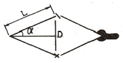
- 180m
- 260m
- 520m
- 700m
(정답률: 87%)
79. 권현망의 자루그물에 대한 설명으로 옳은 것을 모두 고른 것은?
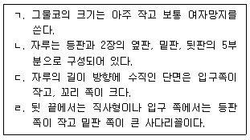
- ㄱ, ㄴ
- ㄴ, ㄷ
- ㄱ, ㄷ, ㄹ
- ㄱ, ㄴ, ㄷ, ㄹ
(정답률: 81%)
80. 다랑어 주낙 어선에서 다랑어를 인양하여 주된 양승작업을 하는 곳은?
- 선수 측 작업 갑판 좌현
- 선수 측 작업 갑판 우현
- 선미 측 작업 갑판 좌현
- 선미 측 작업 갑판 우현
(정답률: 80%)